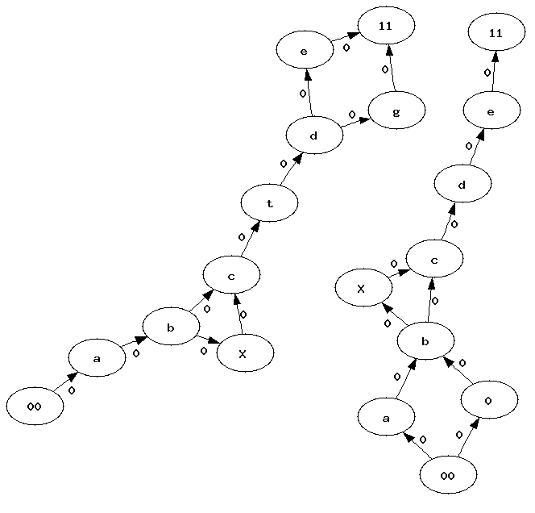
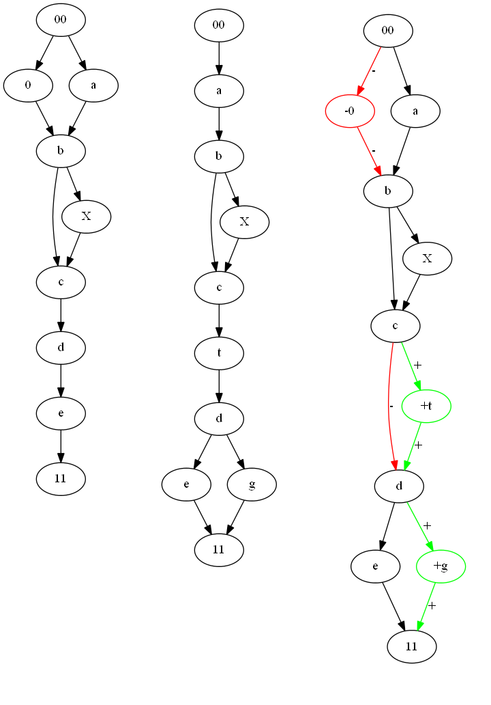

Distance between two graphs#
This page gathers some thoughts about comparing two graphs without any cycle. This problem is known as graph similarity or graph matching. One of the solution is the Graph Edit Distance, a better solution is described in [Blondel2004]. You can also read Graph similarity.
Definitions#
The first approach is implemented in module
graph_distance.
Example of use:
graph1 = [ ("a","b"), ("b","c"), ("b","d"), ("d","e"), \
("e","f"), ("b","f"), ("b","g"), ("f", "g"),
("a","g"), ("a","g"), ("c","d"), ("d", "g"),
("d","h"), ("aa","h"), ("aa","c"), ("f", "h"), ]
graph2 = copy.deepcopy(graph1) + \
[ ("h", "m"), ("m", "l"), ("l", "C"), ("C", "r"),
("a", "k"), ("k", "l"), ("k", "C"),
]
graph1 = Graph(graph1)
graph2 = Graph(graph2)
distance, graph = graph1.distance_matching_graphs_paths(graph2, use_min=False, store=store)
graph is the merged graph mentioned below.
Problem#
This graph distance aims at computing a distance between graphs but also to align two graphs and to merge them into a single one. For example, let’s consider the following graphs:
{kind=link}
We would like to merge them and to know which vertices were merged, which ones were added and deleted. The following ideas and algorithm are only applicable on graphs without cycles. To simplify, we assume there are only one root and one leave. If there are mulitple, we then create a single root we connect to all the existing ones. We do the same for the unique leave we create if there are multiple. It will have all the existing ones as predecessors. We also assume each vertex and each edge holds a label used during the matching. It is better to match vertices or edges holding the same label. A weight can be introduced to give more important to some elements (vertex, edge).
First approach#
Step 1: edit distance#
The main idea consists in using Levenstein’s edit distance.
This algorithm applies on sequences but not on graphs.
But because both graphs do not contain any cycle, we can extract all
paths from them. Every path starts with the same vertex - the only root -
and ends with the same one - the only leave -.
We also consider each edge or vertex as an element of the sequence.
Before describing the edit distance, let’s denote as a path
from the first graph,  as a path from the second one.
is the element i of this sequence. Following Levenstein description,
we denote d(i,j) as the distance between the two subsequences
as a path from the second one.
is the element i of this sequence. Following Levenstein description,
we denote d(i,j) as the distance between the two subsequences
 . Based on that, we use an edit distance defined as follows:
. Based on that, we use an edit distance defined as follows:
First of all, we are not only interested in the distance but also
in the alignment which would imply to keep which element was
chosen as a minimum for each d(i,j). If we denote
the length of path k, then  is the distance we are looking for.
is the distance we are looking for.
Second, if two paths do not have the same length, it implies some elements could be compared between each others even if one is an edge and the other one is a vertex. This case is unavoidable if two paths have different lengths.
Third, the weight we use for the edit distance will be involved in a kind of tradeof: do we prefer to boost the structure or the label when we merge the graphs. Those weights should depend on the task, whether or not it is better to align vertices with the same label or to keep the structure. Here are the chosen weights:
operation |
weight |
condition |
|---|---|---|
insertion(c) |
w(c), weight held by the edge or the vertex |
|
comparison(a,b) |
0 |
if vertices a and b share the same label |
comparison(a,b) |
0 |
if edges a and b share the same label and if vertices at both ends share the same label |
comparison(a,b) |
if edges a and b share the same label and if vertices at both ends do not share the same label |
|
comparison(a,b) |
if a and b do not share the same kind |
|
comparison(a,b) |
if a and b share the same kind but not the label |
Kind means in this context edge or vertex. In that case, we think that sharing the same kind but not the same label is the worst case scenario. Those weights avoid having multiples time the same distance between two random paths which will be important during the next step. In fact, because the two graphs do not contain cycles, they have a finite number of paths. We will need to compute all distances between all possible pairs. The more distinct values we have for a distance between two paths, the better it is.
Step 2: Kruskal kind (bijection on paths)#
Among all possible distances we compute between two paths, some of them might be irrelevant. If for some reasons, there is an edge which connects the root to the leave, computing the edit distance between this short path and any other one seems weird. That’s why we need to consider a kind of paths association. We need to associate a path from a graph to another from the other graph and the association needs to be a bijection assuming two close paths will have a low distance.
After the first step, we ended up with a matrix containing all possible distances. We convert this matrix into a graph where each path is a vertex, each distance is a weighted edge. We use a kind of Kruskal algorithm to remove heavy weighted edges until we get a kind of bijection:
We sort all edges by weight (reverse order).
We remove the first ones until we get an injection on both sides: a path from a graph must be associated to only one path.
Basically, some paths from the bigger graph will not be teamed up with another path.
Step 3: Matching#
Now that we have a kind of bijection between paths, it also means we have a series of alignments between paths: one from the first graph, one from the second graph and an alignment between them computed during the step. We build two matrices, one for the edges , one for the vertices defined as follows:
contains the number of times edge i from graph 1 is associated to edge j from graph 2 among all paths associated by the previous step.
contains the same for the vertices.
Step 4: Kruskal kind, the return (bijection on edges and vertices)#
We now have two matrices which contains pretty much the same information as we have in step 2: each element is the number of times an edge or a vertex was associated with an edge or a vertex of the other graph. We use the same algorithm until we get a kind of bijection between vertices or edges from both matrices.
Step 5: Merging the two graphs#
Once we finalized the previous steps, we know which vertices and edges will be associated with vertices and edges from the other graph. What’s left is to add the left over to the picture which is shown by next Figure:
{kind=link}
Red and symbol - means deleted from graph~1 and not present in graph 2. Green and symbol + means not present in graph 1 and added in graph 2. The black pieces remains unchanged.
The main drawback of this algorithm is its speed. It is very time consuming. We need to compute distances between all paths which is ok when graphs are small but very long when graphs are bigger. Many paths share the same beginning and we could certainly avoid wasting time computing edit distances between those paths.
Distance between graphs#
We defined a distance between two sequences based on the sum of operations
needed to switch from the first sequence to the second one,
we can follow the same way here. The alignment we were able to build
between two graphs shows insertions, deletions and comparisons of different
edges of vertices. By giving a weight of each kind, we can sum them to
build the distance we are looking for. We use the same weights we
defined to compute the alignment between two paths from both graphs.
Let’s defined an aligned graph G = { (a,b) }, G is the set of edges and
vertices of the final graph, a, b are an edge of a vertex from the first
graph for a and from the second graph for b. a or b can be null.
We also defined  .
.
It is obvioulsy symmetric. To proove it verifies , we could proove that every path from will be associated to itself during the first step. It is not necessarily true because two different paths could share the same sequence of labels. Let’s consider the following example:
This graph contains three paths:

The matrix distance between paths will give (x> 0):
The bolded values represent one possible association between paths which could lead to the possible association between vertices:
In that particular case, the algorithm will not return a null distance mostly because while aligning sequences, we do not pay too much attention to the local structure. One edge could be missing from the alignment. We could try to correct that by adding some cost when two vertices do not have the number of input or output edges instead of considering only the labels.
Second approach: faster#
No implemented yet.
Bibliography#
A measure of similarity between graph vertices Vincent Blondel, Anahi Gajardo, Maureen Heymans, Pierre Senellart, Paul Van Dooren, arxiv/0407061